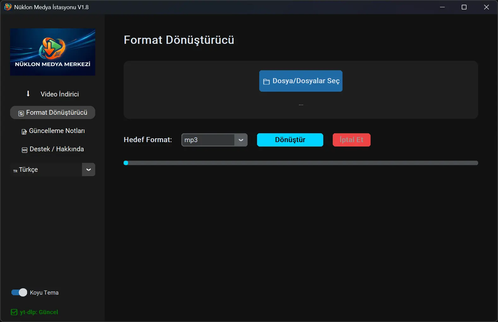
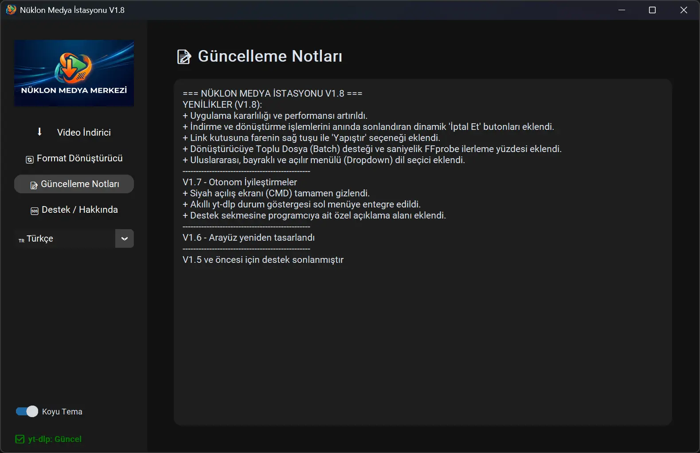

Nüklon Medya Merkezi, arkasında yt-dlp altyapısının olağanüstü hızını barındırır. Bilgisayarınızda hiçbir kurulum yapmadan, tek bir .exe dosyasıyla saniyeler içinde doğrudan indirin.
Sürüm: v1.8 • Açık Kaynak • Güvenli • Boyut: 166.1 MB
Gereksiz reklamlar, tarayıcı eklentileri veya veri hırsızlığı yapan web siteleriyle uğraşmayın. Güvenli ve kurulumsuz sürümü keşfedin.
Hiçbir reklam duvarı, abonelik engeli veya hız kısıtlaması olmadan, sadece bağlantıyı yapıştırın ve indirin. yt-dlp'nin akıllı çoklu bağlantı kanalları indirme hızınızı sınırlarına kadar zorlar.
Dizüstü veya masaüstü bilgisayarınızda sistem dosyalarına, registry (kayıt defteri) çizgilerine girmeyen, iz bırakmayan yazılım. Nüklon sadece tek bir .exe olarak çalışır, dilediğiniz an tek hamlede temizce kaldırılır.
%100 güvenli, her adımı şeffaf ve topluluğun yt-dlp kütüphanesiyle beslenen bağımsız altyapı. Arka planda CPU sömüren veri madencileri veya gizli istekler çalışmaz, gizliliğinizi korur.
Windows 10 ve 11 işletim sistemleriyle tam uyumlu pencerelerimizi inceleyin. İsterseniz aşağıdaki sekmeler arasında gezinebilir, isterseniz de bu alana kendi uygulamanızın ekran görüntülerini yerleştirebilirsiniz.



Platform: YouTube • Format: 1080p MP4 (Full HD)
Uygulamanın şık ve pürüzsüz yapısını, pratik indirme akışlarını ve yt-dlp gücünü tanıtım videosu üzerinden izleyin.
Sitedeki linke tıklayarak en güncel Windows .exe dosyasını dilediğiniz bir klasöre (Masaüstü, Belgeler vb.) indirin.
YouTube, Twitter veya desteklenen sitelerden kopyaladığınız medya URL bağlantısını hafızaya alın.
Nüklon'u çift tıklayarak anında açın, bağlantıyı yapıştırıp "İndirmeyi Başlat" tuşuyla anlık indirmeye başlayın.
Kayıt defterini (registry) meşgul etmeyen, tarama yapmayan ve arka planda asla çalışmayan saf, yerel Windows medya indirme yazılımı.